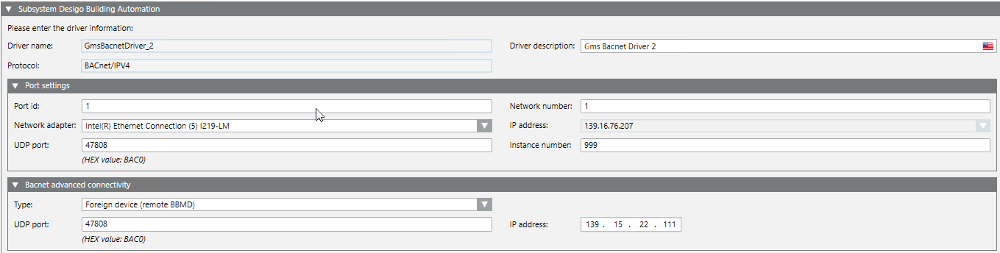

Configure Driver Settings
- You are in step 4 of 8.
- You selected a new driver.
- In the Subsystem Desigo Automation Network expander, enter a name in the Driver description field.
- In the Port settings expander, enter the following data:
- Port ID
- Network number
- Network adapter from the drop-down list
- IP address (is taken over)
- UDP port
- Instance number
- In the BACnet Advanced Connectivity expander, enter one of the following options in the Type drop-down list:
- None
- Foreign device
a. In the UDP port field, enter the port number.
b. In the IP address field, enter the address. - BBMD
a. Click Add.
b. Enter the IP address, UDP port and Subnet mask. - Click Next Page
 .
.
Note: The driver is started automatically prior to data import.
